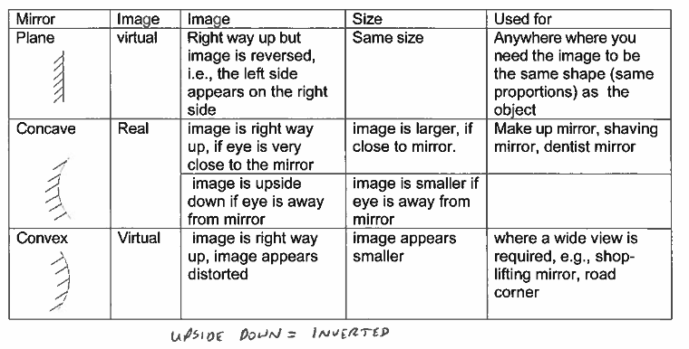

Light is a type of electromagnetic radiation that allows the human eye to see or makes objects visible. Light travels in a straight line and at 300 million metres per second. Opaque objects block light to form shadows, translucent objects block some of the light, ad transparent objects let all the light through.
Mirrors
The law of reflection is that the angle of incidence is equal to the angle of reflection.

The line drawn at 90° to the mirror is called the normal. There are three types of mirrors- Plane, Concave, and Convex.
Light is a form of energy and travels in waves. Different colours have different wavelengths with blue light having the smallest wavelength and red having the longest. White light can be split up in a spectrum of colour or a rainbow.
- Red
- Orange
- Yellow
- Green
- Blue
- Indigo
- Violet
The primary colours of light are red, blue, and green. Mixing red, green, and blue of equal intensity gives white.the secondary colours of light are magenta, yellow, and cyan.
Dark colours absorb more light so they dot reflect as much. White objects reflect all light ad dot absorb any. Black objects reflect non light so they appear black. The reason we see a coloured object is because it only reflects light of that colour.
Refraction
Refraction happens when light changes direction, or bends, when it moves from one material to another. For example, light traveling through the air refracts when it hits water. This can make a straw in a glass of water look bent at the surface of the water. Some surfaces neither reflect nor refract light. A medium is medium is the substance that the light is moving through. Eg. Air, water, glass, diamond, even a vacuum.
Sound
What is a wave?
A wave is a disturbance that travels through a medium from one location to another location. A wave moves energy not matter. There are two types of waves: transverse and longitudinal.
Transverse
In transverse waves the particles move perpendicular to the wave movement. Each particle in the wave goes up and down as the wave moves to the right.
Longitudinal
Longitudinal waves are when the movement of the particles is parallel to the direction of the wave.